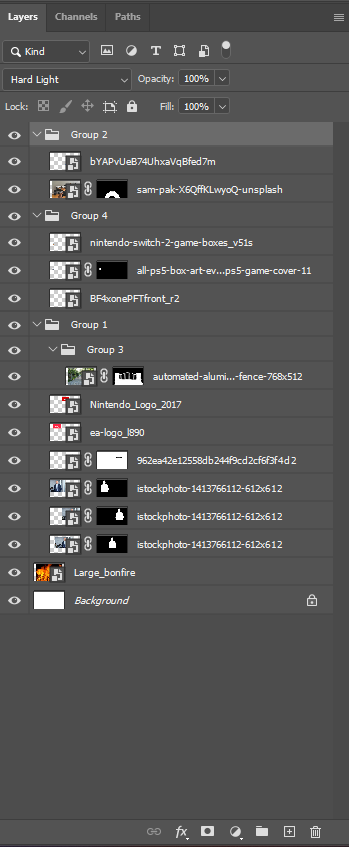
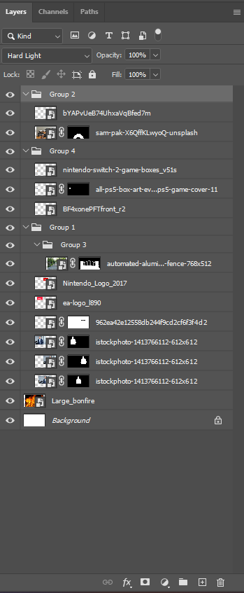

For this photomontage, I wanted to base it off of the environmental issue of pollution contaminating the environment, especially noticeable in first world countries like New York City within the United States. I wanted this photomontage image to be a reflection that while environmental protection is usually a major issue that many climate
activists believe that should garner most of the public's attention, the general populous just doesn't care. This is especially true considering there is a giant "garbage island" off in the Pacific Ocean, that being the Great Pacific Garbage Patch. This island is a physical representation of how little people care about the issue of pollution
and how many people littering/ throwing out their trash into the surrounding environment, so much so that a literal island comprised of plastic waste floating in the ocean, off the coast of California. Worse yet, is the example I'm pointing too is one of five total garbage patches floating in the ocean, while there are effects to cleanup
these garbage patches, how indifferent does the general populace have to be that vast amounts of thrown out waste accumulates into the ocean to such an amount that an "island" is formed. I wanted to reflect this in this photomontage through having people going about their day, apathetic to a vast amount of garbage in the ocean behind them. To
add onto this by including one of the most famous locations on the planet in the background, letting filth accumulate to such a degree. Mainly trying to do a similar recognition of how people view the Gilded Age of American history, being nothing more than a fleeting image of something prosperous.
The images I used for this photomontage are a mix between images from google search, Unsplash, Pexels and Openverse. Used the mask tool to try and create people walking, minding their own business, in front of a gate with an ocean in the background. Additionally adding in the skyline for NYC to add an aura of prestige to the image, then adding
in different images of trash in the water. Finally, using the gradient tool on the trash image group alongside the skyline image to create a sense of depth of field, that as further away the trash got within the water, the harder it was to see, so that it doesn't just look like a bunch of images cropped onto one another. For blend mode, I applied
the blend mode of multiply in order to try and darken the image, mainly for the skyline of NYC in the background. A bit of a way to illustrate a form of falsehood, that even though the big apple of New York is supposed to represent a beautiful, marvelous location and physical representation of the United States values of freedom and library
for all, with the Statue of Library being one of the first things one sees when entering NYC through sea methods, there is still dirt and grime throughout the city. One of the most explicit would be taking the MTA system, with there being constant trash on the subway rails, inconsistent trains for what is supposed to be the main way that
New Yorkers travel within the city without a car or bus, and constant pests that live on subway stations/ tunnels. I have to take the J and E trains in order to reach Manhattan from farther eastern Queens and I know about the careless attitude the staff and other New Yorkers feel towards general maintenance and appearance of the subway stations.
On a couple of occasions when walking down to the J train portion of the Sutphin Blvd-Archer AV-JFK Airport station, you can see clear as day, a giant rat on the station platform at one end of the station before it then runs away into the subway tunnel at the approach of people filling up the platform. So I just felt that darken the image felt like
the right move in terms displays this point across.
 

For my second photomontage, I wanted to relate it back to a recent social movement concerning consumer rights in relation to the video game industry. The Stop Killing Games movement started in 2024 by a man named Ross Scott after the announcement of "The Crew" (2014) released by Ubisoft was discontinued on December 14, 2023, ending servers on their end.
The issue was that said video game needed constant internet access to be able to play it, including the single player mode, so those who purchased their product would no longer be able to access their product now that Ubisoft was ending their support for the game. This also includes time wasted by whoever played that video game, and wasted money put into the
video game, because it had microtransactions. What's worse is that not only was the game delisted on online story fronts, but shortly in April Ubisoft was revoking licenses of "The Crew" from players who bought the game. The issue being that when purchasing a video game, one expects to continually own that copy of the game that they now legally own, and can
continue to play their copy without some arbitrary expiration date attached to them, that doesn't include when the game would "expire". That is the goal of this movement, to provide a way for gamers to preserve their video games, after that "expiration date" has been reached and those games are taken offline. This was through signing petitions to bring this
discrepancy of consumer rights to a European government in hopes of having new laws introduced to help preserve video games for those that purchase a copy and wish to keep using it past their "end date" (whenever decided by their publishers). I decided to represent this through having a gamer holding out an Xbox controller, with the Stop Killing Games logo on
it, with the gates to video games being blocked off, with three video game companies behind it. The three companies are the most notorious in only caring about their own profits, rather than providing a good product tot their consumers (Nintendo, Bungie and Electronic Arts (EA)). The reason I even chose those three are how Nintendo handles ownership of the Switch
2 and its game key cards, being nothing more than digital licences to a video game with an unknown expiry date that doesn't even contain the full game's code, "The Vault" in relation to Destiny 2, where Bungie was "storing" content in previously released dlc's, including if the player's paid for them, only to find out that Bungie themselves can't access
vaulted content without a major overhaul and EA and their constant use of microtransactions and releasing the same game over and over again at full piece.
I primarily used several images from google search in the creation of this photomontage, mainly using the masking tool to hide elements of my selected images that I didn't want to show in my photomontage.Additionally using the logos of the mentioned video game companies to act as the head of a man in a suit, as a juxtaposition of a soulless, faceless company, who
only cares about their own bottom line. Then it was just a measure of positioning differing layers to one another, so that no one image is particularly out of place in comparison to images around it by jolting out of place. I decided to use the blending modes of hard light and color dodge on several images of the photomontage to make a majority of the picture,
lighten up/ lose opacity, in order to look like it is fading in and out of a fiery background. The fiery image that the images are blending to are meant to be a physical representation of how the horrible the triple A gaming industry currently is, releasing mediocre titles after mediocre titles for the past several years now at $60, even now wanting more with
their pricing with the introduction of the PlayStation 5 and Switch 2. Paying extra money for an upgrade pack, so that the titles that are forward compatible with the newer systems and hardwire being capable of using that new hardware. Or just constantly remastering previous titles for newer consoles, than just making new, innovative, content for players in
Sony's case. The three companies are meant to represent gate keepers to modern video games, with it being their mission to drain away all their fans of their money in return for mediocrity.